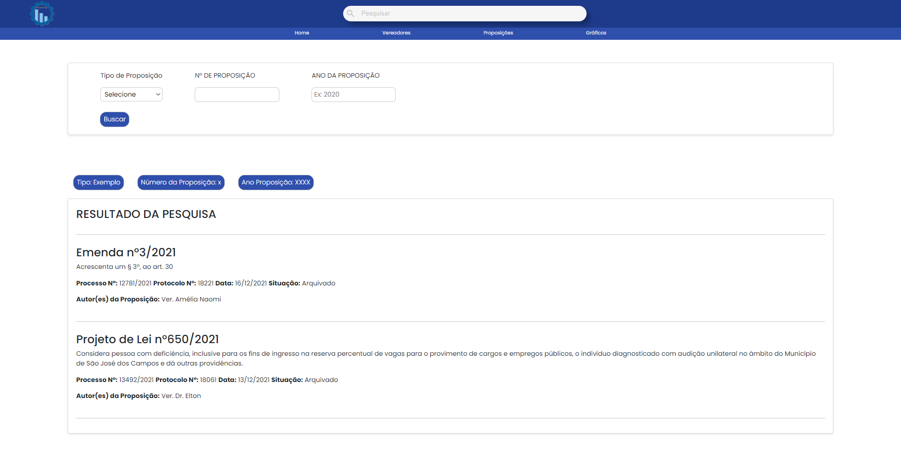
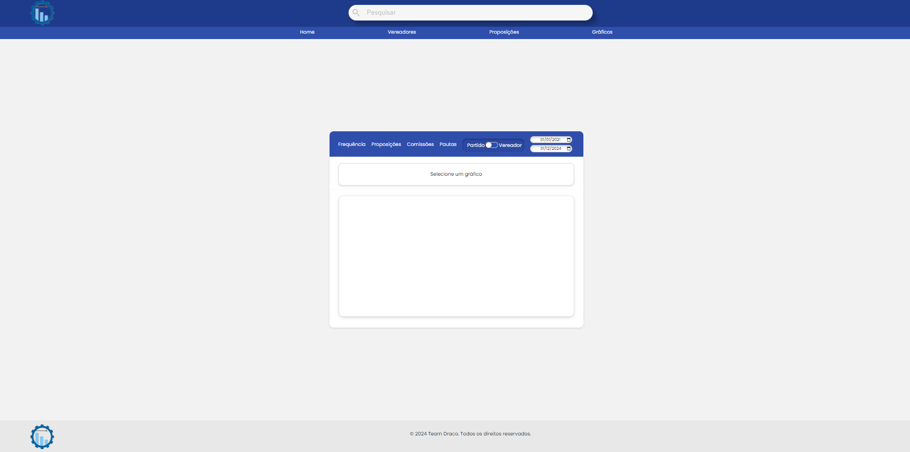

Projeto Acadêmico | Desempenho de Vereadores
Sobre o Projeto
O desafio proposto aos alunos é criar uma plataforma web que disponibilize informações sobre o desempenho dos vereadores da cidade durante o atual mandato. O objetivo é oferecer aos eleitores dados claros e acessíveis que ajudem a tomar decisões informadas nas eleições municipais que se aproximam.
Página Home
Há um carrossel onde são mostradas as principais funcionalidades do site. Abaixo do carrossel, a página apresenta todos os vereadores do atual mandato, uma seção com as últimas proposições realizadas pelos vereadores, permitindo que os cidadãos acompanhem os novos debates e temas em discussão. Logo em seguida, a seção de últimos projetos de lei aprovados traz um resumo das leis mais recentes que foram aprovadas, com informações sobre seu impacto e objetivos.

Página Vereadores
A página de Vereadores oferece uma visão rápida e prática de todos os vereadores eleitos. Cada vereador é listado com seu nome completo e o partido político ao qual pertence. Logo abaixo, há um botão que direciona para um perfil detalhado, onde o cidadão pode acessar mais informações.

Página Perfil Individual do Vereador
O perfil individual de cada vereador oferece uma visão completa de sua trajetória e atuação política. Na página, os visitantes podem encontrar uma biografia detalhada, destacando a formação, experiência profissional e carreira política do vereador. Também são apresentadas todas as proposições e projetos de lei aprovados do vereador durante o mandato, permitindo que os eleitores acompanhem suas iniciativas e o impacto de suas ações no município.
.png)
Página Proposições
A página de Proposições permite que os cidadãos tenham acesso a todas as proposições apresentadas pelos vereadores ao longo do mandato atual. Nesta página, é possível navegar por uma lista detalhada de todas as proposições, como moções, requerimentos, emendas e projetos de lei, permitindo uma visão abrangente do trabalho legislativo.
Página Gráficos
A página de Gráficos oferece uma visão analítica e visual do trabalho realizado por cada vereador durante o mandato. Utilizando gráficos interativos e comparativos, a página permite aos cidadãos acompanhar e avaliar a performance dos seus representantes de maneira clara e objetiva.
Minhas Participações
- Criação e correção da página Home
- Inserção de um link de direcionamento para últimas propostas e leis aprovadas na página Home
- Correção dos gráficos gerais e individuais
- Criação da documentação do projeto